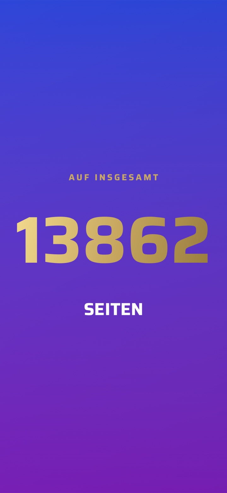
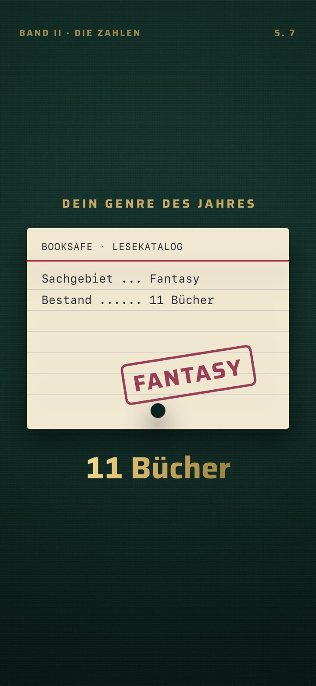
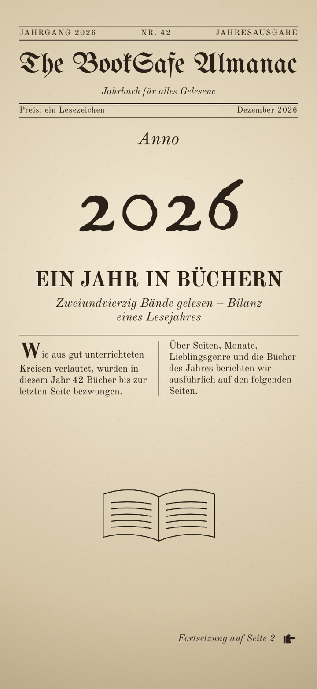

Was BookSafe alles kann
Hier stehen die Neuerungen aller früheren Versionen, von der neuesten zur ältesten. Zusammen zeigen sie, was in BookSafe steckt — vom Scannen und den Reihen über Ausleihen, Wunschliste und Statistik bis zu iCloud-Sync, Apple Watch und den Filmen im Jahresrückblick.
Jede Beschreibung gibt den Stand ihrer Version wieder; manches wurde seither weiter ausgebaut. Was die aktuelle Version bringt, steht auf der Seite zu Version 1.9.
Version 1.8
Im App Store seit 17. Oktober 2026
BookSafe 1.8 ist das Update für alle, die Comics und Reihen sammeln: Comics wie Asterix werden richtig erkannt, Cover, Band und „Bände gesamt“ trägst du schon beim Anlegen ein, und der Jahresrückblick bekommt sein viertes Filmdesign — den „Lesepass“.
Neu
1Ein viertes Filmdesign: der Lesepass
Neben „Glanz“, „Einband“ und „Almanach“ gibt es im Jahresrückblick jetzt den Lesepass. Er erzählt dein Lesejahr als Comic-Ausweis: zehn Seiten zum Umblättern, mit Stempeln, Ticket und eigenem Song. Der Film dauert 80 Sekunden. Du wählst ihn wie die anderen Designs über den Paletten-Knopf.



2Den Jahresrückblick als Bild oder als Video teilen
Der Teilen-Knopf im Jahresrückblick fragt jetzt, was du teilen möchtest: „Bild teilen“ für die Übersicht deines Jahres oder „Video teilen“ für den Film im gewählten Design. Das Video lässt sich teilen, ohne den Film vorher anzusehen.
3Das Cover schon beim Anlegen
In „Buch hinzufügen“ wählst du das Cover gleich mit — aus der Fotobibliothek oder direkt abfotografiert. Beim Abfotografieren schneidet BookSafe das Cover automatisch zu. Im Buchdetail geht beides unter „Cover ändern“.
4Band und „Bände gesamt“ von Hand
Beim Anlegen trägst du unter „Reihe“ jetzt auch den Band und die Zahl der Bände ein. „Bände gesamt“ lässt sich außerdem im Reihen-Blatt des Buchdetails ändern. Was du selbst einträgst, überschreibt die Automatik nicht.
5Kontakt & Feedback in den Einstellungen
In den Einstellungen gibt es jetzt „Kontakt & Feedback“. Es öffnet eine Mail an uns, in der App-Version und Gerät schon stehen. Daten aus deiner Bibliothek gehen nicht mit.
Verbessert
- Comics werden richtig erkannt: der Albumtitel statt eines Reihennamens mit Nummer — etwa „Asterix und Kleopatra“ statt „Asterix 02“ —, die richtige Reihe statt eines Verlagstitels und das Genre „Comic“ statt „Roman“
- eine ISBN, die zu einer Sammelbox gehört, wird als Box angelegt statt als Band 1
- „Daten bereinigen“ in den Einstellungen korrigiert die Reihe bereits gespeicherter Bücher
- sauberere Reihennamen und Untertitel: ohne Katalog-Klammern und Bindestrich-Ketten, ohne Werbetext im Untertitel
- Spin-offs landen in ihrer eigenen Reihe
Dazu viele weitere Detailverbesserungen.
Version 1.7
Im App Store seit 12. Oktober 2026
BookSafe 1.7 ist das Jahresrückblick-Update: Dein Lesejahr gibt es jetzt als Film in drei Designs — neben dem bekannten „Glanz“ neu als gebundenes Buch („Einband“) und als historische Zeitung („Almanach“). Dazu erkennt BookSafe Tropes auch dann, wenn ein Buch keinen Klappentext hat, und sortiert ungelesene Leihbücher nach Rückgabedatum nach vorn.
Neu
1Zwei neue Filmdesigns für den Jahresrückblick
Der Jahresrückblick hat einen neuen Paletten-Knopf. Darüber wählst du, wie der Film zu deinem Lesejahr aussieht. Jedes Design hat seinen eigenen Song, und jeder Film lässt sich als Video teilen.
Einband erzählt dein Jahr als gebundenes Buch in drei Bänden: Bücherregal, Papierstapel und Karteikarte aus dem Lesekatalog, mit aufklappendem Leineneinband und umblätternden Seiten. Der Film dauert eine Minute.
Almanach macht aus deinem Jahr eine historische Zeitung — mit Druckwalze, Stempel und Stichen in Sepia. Dein Buch des Jahres steht als freigestelltes Buch auf dem Podest. Auch dieser Film dauert eine Minute.
Glanz, das bisherige Design mit goldenen Zahlen auf leuchtendem Verlauf, bleibt erhalten (40 Sekunden).
2Tropes auch ohne Klappentext
Bisher hat BookSafe Tropes nur im Klappentext gefunden. Jetzt übernimmt die App sie auch aus den Schlagwörtern, die der Verlag an die Deutsche Nationalbibliothek meldet — etwa „Enemies to Lovers“ oder „Forced Proximity“. Gerade bei Neuerscheinungen, für die es noch keinen Klappentext gibt, sind die Tropes damit gleich beim Hinzufügen da.
Verbessert und behoben
- Bibliothek nach Status sortiert: Ungelesene Leihbücher stehen jetzt zuerst, das mit dem nächsten Rückgabedatum ganz oben
- Buchdaten auch bei einer Störung der Deutschen Nationalbibliothek: BookSafe weicht dann auf ein zweites Datenformat aus; antwortet die Bibliothek gar nicht, sagt die App das, statt zu melden, das Buch stehe in keinem Katalog
- die Beschriftungen der Kennzahlen in Statistik und Jahresrückblick sind besser lesbar
- VoiceOver liest am Podest des Jahresrückblicks „Buch des Jahres – Platz 1“ samt Titel und Autor vor
- das Erscheinungsfeuerwerk zeigt vom ersten Moment an die richtigen Bücher und Cover
Dazu viele weitere Detailverbesserungen.
Version 1.6
Im App Store seit 7. Oktober 2026
BookSafe 1.6 ist das Geräte-Update: Die App ist bereit für das iPhone Duo und nutzt dessen Außen- und Innendisplay. Auf dem iPad stehen im Querformat Liste und Buch nebeneinander, eine laufende Lesesitzung lässt sich direkt aus der Live-Aktivität beenden, und abgeschlossene Lesesitzungen lassen sich nachträglich bearbeiten.
Neu
1Bereit für das iPhone Duo
BookSafe nutzt beide Displays des iPhone Duo. Zugeklappt steht die Werkzeugleiste als senkrechte Leiste am rechten Rand. Damit Filter, Sortierung und Ansicht nicht in einem Überlaufmenü verschwinden, stehen sie dort als eigene Chip-Zeile über der Liste, und die Knöpfe in Blättern zeigen ✕ und ✓ statt Text.
Aufgeklappt richten sich die Kacheln in Bibliothek und eigenen Listen an der Falte aus: Die Spaltenzahl ist gerade, sodass keine Kachel in der Falte liegt. „Heute“ und die Statistik nutzen die Breite zweispaltig. Im Querformat bleibt die Liste breit, und ein geöffnetes Buch zeigt das Cover links der Falte und die Angaben rechts.
Im Tischstand — halb aufgeklappt auf dem Tisch — liegen im Lesetimer Cover und Lesezeit über der Falte, „Pause“ und „Sitzung beenden“ darunter.
2iPad im Querformat: Liste und Buch nebeneinander
Auf dem iPad zeigen Bibliothek und Wunschliste im Querformat die Liste links und das gewählte Buch rechts. Die Aufteilung bleibt auch stehen, während du suchst und die Tastatur offen ist. Hochkant bleibt alles wie gewohnt.
3Lesesitzung aus der Live-Aktivität beenden
Die Live-Aktivität der Lesesitzung hat jetzt einen Knopf „Beenden“ — auf dem Sperrbildschirm und in der Dynamic Island. Nach dem Entsperren öffnet BookSafe direkt die Eingabe der Endseite. Weil iOS den Knopf erst nach dem Entsperren ausführt, endet die Sitzung in diesem Moment.
Die erweiterte Ansicht in der Dynamic Island ist neu geordnet: Die Lesezeit steht in der Bedienzeile und bleibt auch nach einer Stunde vollständig lesbar.
4Lesesitzungen nachträglich bearbeiten
Im Buchdetail steht hinter der Lesedauer jeder abgeschlossenen Sitzung ein Stift. Er öffnet das Blatt „Sitzung“ mit Datum und Uhrzeit, Dauer und gelesenen Seiten. Änderst du die Seitenzahl, verschiebt sich der Lesestand des Buchs um die Differenz.
Ab sechs Sitzungen führt „Alle Sitzungen (n)“ zur vollständigen Liste — dort lassen sich auch ältere Sitzungen bearbeiten und löschen, die vorher nicht erreichbar waren. Löschen lässt den Lesestand unverändert.
Verbessert und behoben
- Sammelbände und Anthologien ohne Autor im Katalog übernehmen jetzt den Herausgeber als Autor
- fehlt zum Speichern noch Titel oder Autor, sagt „Buch hinzufügen“ jetzt, was fehlt, statt den Knopf still zu sperren
- VoiceOver liest in der Kachelansicht Titel, Autor und Status vor
- im Lesetimer stehen „Pause“ und „Sitzung beenden“ bei wenig Platz untereinander, statt umzubrechen
- in einer Reihe, die aus „Heute“ oder der Statistik geöffnet wurde, öffnete ein Tipp auf einen Band nichts
- bei der Erscheinungs-Feier im Querformat lag „Fertig“ unter dem Bildschirmrand
- Meilenstein-Stempel tragen in der englischen Oberfläche jetzt englische Namen
Dazu viele weitere Detailverbesserungen.
Version 1.5
Im App Store seit 27. September 2026
BookSafe 1.5 bringt eigene Listen: Bücher lassen sich selbst benannten Listen zuordnen, in einer eigenen Ansicht durchblättern und mit anderen teilen — ebenso die ganze Wunschliste. Eine laufende Lesesitzung erscheint jetzt auf dem Sperrbildschirm, eine falsch erwischte Ausgabe lässt sich tauschen, und an der Apple Watch lässt sich eine versehentlich gestartete Sitzung verwerfen.
Neu
1Eigene Listen
Bücher lassen sich jetzt selbst benannten Listen zuordnen — etwa „Herbstbücher“ oder „Urlaub 2027“; ein Buch darf in mehreren Listen stehen. Im Buchdetail heißt die Sektion dafür „Standort & eigene Listen“: Ein Tipp auf „Listen“ öffnet die Auswahl zum Abhaken, dort legst du auch neue Listen an. Das geht ebenso beim Hinzufügen eines Buchs.
Unter „Sortieren & Filtern“ filtert der neue Block „Filter nach eigenen Listen“ die Bibliothek nach einer Liste, mit der Zahl der Bücher; langes Drücken benennt eine Liste um oder löscht sie. Die Suche findet Bücher auch über ihre Listen. Listen aus früheren Importen erscheinen automatisch.
2Die Ansicht „Eigene Listen“
In Bibliothek und Wunschliste gibt es neben Liste und Kacheln jetzt eine dritte Ansicht. Sie zeigt jede eigene Liste als Karussell mit Covern und der Zahl der Bücher. Über einen Knopf ordnest du mehrere Bücher auf einmal einer Liste zu. Eine geöffnete Liste hat ihre eigene Suche und ihre eigene Sortierung, die sich das Gerät merkt.
3Listen und Wunschliste teilen
Jede eigene Liste lässt sich teilen — als Story-Bild mit den Covern, dem Listennamen, der Anzahl und dem Lesefortschritt, oder als Text mit allen Büchern samt ISBN, passend für Nachrichten und Mail. Passt eine Liste nicht auf ein Bild, steht zuletzt „+ N weitere“; der Text enthält immer alle Bücher.
Ein neuer Knopf in der Wunschliste teilt auf dieselbe Weise die ganze Wunschliste, sortiert nach Priorität — praktisch für Familie und Freunde. Bücher, die noch erscheinen, tragen ihr Erscheinungsdatum, besonders gewünschte einen Stern.
4Die Lesesitzung auf dem Sperrbildschirm
Eine laufende Lesesitzung erscheint jetzt als Live-Aktivität auf dem Sperrbildschirm und in der Dynamic Island — mit Cover, Titel, Startseite und der laufenden Lesezeit. Pausieren und Fortsetzen geht direkt dort, ohne die App zu öffnen; läuft die Sitzung auch auf der Apple Watch, zieht die Uhr mit. Ein Tipp auf die Anzeige öffnet die Sitzung in der App.
5Ausgabe wechseln
Beim Hinzufügen die falsche Ausgabe erwischt, etwa das E-Book statt des Taschenbuchs? Im Buchdetail lässt sie sich unter „Weitere Aktionen → Ausgabe wechseln“ gegen eine andere Ausgabe desselben Bands tauschen, statt das Buch zu löschen und neu anzulegen. Eine Vorschau zeigt vorher, was sich ändert. Lesestatus, Bewertung, Notizen, Lesesitzungen, Standort und eigene Listen bleiben erhalten, ein eigenes Cover-Foto ebenfalls, solange du nicht das neue Cover wählst. Die Funktion steht für Bücher einer Reihe zur Verfügung.
6Lesesitzung an der Apple Watch verwerfen
Versehentlich gestartet oder den Timer vergessen? Über das ✕ oben links im Timer der Uhr lässt sich eine Sitzung nach einer Rückfrage verwerfen. Sie verschwindet auf Uhr und iPhone und taucht nicht in der Statistik auf.
Verbessert und behoben
- der Import von CSV-Dateien aus anderen Buch-Apps erkennt ein weiteres Format, übernimmt den Lagerort als Standort und liest mehr Datumsangaben
- der PDF-Export der Bibliothek nimmt die Cover aus den auf dem Gerät gespeicherten Miniaturen — bei großen Bibliotheken deutlich schneller, und die Cover erscheinen auch ohne Netz
- „Weitere Bände der Reihe“ ließ gelegentlich einen Band aus
Dazu viele weitere Detailverbesserungen.
Version 1.4
Im App Store seit 25. September 2026
BookSafe 1.4 bringt neue Funktionen rund um die eigene Bibliothek: Wer aus einer anderen Buch-App umzieht, nimmt jetzt seine Bewertungen, Lesedaten und Notizen mit. Reihen lassen sich zu einem Eintrag bündeln, gedruckte Bücher bekommen einen Standort, und Autoren lassen sich nach dem Nachnamen sortieren.
Neu
1Umzug aus anderen Buch-Apps mit allen Angaben
Der Import von CSV-Dateien aus anderen Buch-Apps übernimmt jetzt je Buch Bewertung, Lesestatus, Lesedaten, Regale bzw. Tags, Rezension und Notizen, Reihe und Band, Format und Leihe — bisher kam nur die ISBN mit. Was BookSafe selbst nicht kennt, etwa Kaufangaben, landet als eigener Block in der Notiz des Buchs, damit nichts verloren geht. Eine Bewertung auf einer Zehnerskala wird auf fünf Sterne umgerechnet.
Bücher ohne ISBN kommen jetzt ebenfalls mit, und ISBNs, denen Excel beim Bearbeiten der Datei die führenden Nullen genommen hat, werden repariert. Titel, Cover und die übrigen Buchdaten ergänzt wie gewohnt die Online-Suche.
2Reihen bündeln
Ein neuer Schalter unter Einstellungen → Darstellung → „Reihen bündeln“ zeigt jede Reihe ab zwei Büchern als einen einzigen Eintrag in der Bibliothek, mit Cover und der Zahl der Bücher — in der Liste und im Raster. Ein Tipp öffnet die Reihe mit allen Bänden. Wer sucht, sieht weiterhin die einzelnen Bücher. Der Schalter ist zu Beginn aus; an der Bibliothek selbst ändert er nichts.
3Ein Standort für eigene Bücher
Im Buchdetail und beim Hinzufügen lässt sich jetzt festhalten, wo ein gedrucktes Buch zu Hause steht: ein selbst benannter Ort wie „Regal Wohnzimmer“ und, wenn du magst, ein Fach. Bereits vergebene Orte und Fächer stehen zur Auswahl, du musst sie also nur einmal eintippen. Die Bibliothekssuche findet Bücher auch über ihren Standort. Bringt eine importierte Datei Standortangaben mit, werden sie übernommen.
4Sortierung „Autor (Nachname)“
Neben der bisherigen Sortierung nach Autor gibt es jetzt „Autor (Nachname)“: „Sebastian Fitzek“ steht unter F, „Ursula K. Le Guin“ unter L, „Ludwig van Beethoven“ unter B. Die Sortierung ist auch in der Wunschliste wählbar.
Behoben
- im Import-Dialog erschienen in der englischen Fassung einige Texte auf Deutsch
Dazu viele weitere Detailverbesserungen.
Version 1.3
Im App Store seit 23. September 2026
BookSafe 1.3 ist ein Feinschliff-Update. Es bringt keine neuen Bereiche, sondern macht das Vorhandene verlässlicher, schneller und schöner: Erscheinungs-Meldungen kommen zuverlässig an, die Widgets nutzen ihre Fläche, und die App reagiert spürbar flotter.
Verbessert
Erscheinungs-Meldungen kommen zuverlässig
Steht ein Buch mit Erscheinungsdatum auf deiner Wunschliste, meldet BookSafe sich am Erscheinungstag — jetzt auch dann zuverlässig, wenn das Buch auf einem anderen Gerät auf die Wunschliste kam oder sein genaues Datum erst später bekannt wurde. Die App plant die Meldungen bei jedem Start aus dem aktuellen Stand deiner Wunschliste neu, statt sich auf einmal gesetzte Termine zu verlassen.
Erscheinen mehrere Bücher am selben Tag, bekommst du eine Meldung für alle statt einer je Buch.
Die Widgets nutzen ihre Fläche
Weniger Rand, mehr Inhalt: die Cover sind größer, und Buchtitel dürfen zwei Zeilen lang sein, statt nach wenigen Buchstaben abgeschnitten zu werden. Im großen Widget passen fünf Bücher je Spalte statt vier. Die kleinen Widgets stellen den Countdown neben ein größeres Cover, die mittleren folgen derselben Aufteilung.
Schnellere Tab-Wechsel und ein schnellerer Start
Beim Wechsel zwischen den Tabs lädt BookSafe die Bibliothek nur noch neu, wenn sich an ihr tatsächlich etwas geändert hat. Eine Aufräum-Prüfung, die bisher bei jedem Öffnen der App lief, läuft nur noch einmal. Und die Widgets werden nur noch neu gezeichnet, wenn sich an ihren Daten etwas geändert hat. Am deutlichsten merkt man das bei großen Bibliotheken und auf älteren iPhones.
Bücher ohne Cover sehen gut aus
Hat ein Buch kein Cover, zeigt BookSafe jetzt überall eine gestaltete Fläche mit dem Titel statt eines leeren Buchsymbols — in der Liste, im Raster, auf den Heute-Karten und im Buchdetail. So bleibt jedes Buch auf einen Blick erkennbar.
Das Leseupdate füllt den Raum
Das Story-Bild aus dem Heute-Tab nutzt den freien Platz besser: Ist der Spruch kurz, zeigt es bis zu vier Bücher statt drei.
Behoben
- ein Fehlalarm am Monatsersten, wenn zu einem Buch der Wunschliste nur Monat und Jahr bekannt sind
- beim Spruchstil „Urkunde“ lief der Ring durch die Signaturzeile
- beim Spruchstil „Erste Auflage“ lief der Goldrahmen unter den Goldschnitt und eine lange Zeile in die Eckrauten
Dazu viele weitere Detailverbesserungen.
Version 1.2
Im App Store seit 14. September 2026
BookSafe 1.2 bringt fünf neue Funktionen — und daneben eine Menge Arbeit an einer Stelle, die man nicht sieht, sondern merkt: Cover sind jetzt sofort da, auch ohne Netz.
Fünf neue Funktionen
1Backup — deine Bibliothek in einer Datei
Sichere deine komplette Bibliothek als eine einzige Datei: alle Bücher mit ihren Daten, die Lesesitzungen und die Cover, die du selbst aus deiner Fotomediathek gewählt hast. Auf einem neuen Gerät spielst du sie wieder ein — du wählst die Datei aus, siehst eine Vorschau dessen, was passieren wird, und bestätigst dann.
Die Wiederherstellung füllt nur Lücken und überschreibt nichts. Ein Buch, das auf dem Gerät schon existiert, behält seine Werte; aus dem Backup kommen nur Felder dazu, die vorher leer waren. Lesefortschritt und Lesestatus werden dabei nie zurückgesetzt.
2Der Scanner liest auch die gedruckte ISBN
Bücher mit beschädigtem, überklebtem oder ganz fehlendem Barcode lassen sich jetzt trotzdem erfassen. Der Scanner sucht in einem Durchgang nach beidem — dem Barcode und der gedruckten ISBN auf dem Umschlag oder im Impressum.
Eine erkannte Zahl wird nur übernommen, wenn ihre Prüfziffer stimmt. Stehen mehrere mögliche Nummern auf der Seite, fragt der Scanner nach, statt zu raten.
3Lesestatus „Abgebrochen“
Für Bücher, die du bewusst nicht zu Ende liest. Sie verschwinden aus „Am Lesen“, ohne als gelesen zu zählen — weder in der Statistik noch im Jahresziel noch im Lesestreak. In der Übersicht der Statistiken bekommen sie eine eigene Zeile, getrennt von „Gelesen“.
4Leseupdate teilen
Ein Tipp im Heute-Tab erzeugt ein fertiges Story-Bild mit den Büchern, die du gerade liest, samt Fortschritt — 1080 × 1920 Pixel und damit ohne Zuschnitt passend für die Instagram-Story oder den WhatsApp-Status.
5Wunschliste und Lesehistorie
Die Wunschliste zeigt jetzt unter jedem Erscheinungsdatum die Sprache der Ausgabe — welcher Titel die deutsche Übersetzung ist und welcher das Original, steht damit direkt in der Zeile. Und ein Tipp auf ein Polaroid in der Lesehistorie öffnet das Buch, statt nur schön auszusehen.
Verbessert
Cover sind sofort da — auch offline
BookSafe behält von jedem Cover eine kleine Vorschau dauerhaft auf dem Gerät, statt sie bei jedem Blättern neu zu laden. Beim Scrollen durch die Bibliothek kommen die Bilder deshalb aus dem Gerät und nicht aus dem Netz — und sie sind auch dann da, wenn gerade keine Verbindung besteht. Nach einer Wiederherstellung oder einem Gerätewechsel füllt die App diese Ebene von allein wieder auf.
Die Cover-Auswahl trifft das richtige Buch
Bei Reihen erscheint kein fremder Band mehr, leere und Platzhalter-Kacheln sind verschwunden, und eine Cover-Adresse, die nicht mehr erreichbar ist, wird automatisch durch eine gültige ersetzt. Ein Cover, das du selbst ausgewählt hast, bleibt deine Wahl — die Automatik fasst es nicht mehr an.
Englischsprachige Bücher
Englischsprachige ISBNs werden jetzt in weiteren Katalogen gesucht, und die Sprache der Ausgabe wird zuverlässiger erkannt. Findet sich zu einer ISBN nichts, geht es direkt zur Titelsuche weiter, statt mit leeren Feldern dazustehen.
Apple Watch
Nach einem Update oder einer Neuinstallation kommen die Cover auf der Uhr wieder an, statt grau zu bleiben.
Behoben
- ein falsches Abschlussdatum bei nachträglich eingetragenen Lesesitzungen
- ein Buch, das auf „Gelesen“ sprang, wenn während einer Sitzung an der Uhr die Seitenzahl korrigiert wurde
- „2.026“ statt „2026“ auf der Schlussseite des Jahresfilms
- Text von einer Verlagswebsite statt des Klappentexts in Buchbeschreibungen
- ein Heute-Tab, der einen anderen Spruch teilte, als er zeigte
Dazu viele weitere Detailverbesserungen.
Version 1.1
Im App Store seit 15. August 2026
Neu
- Apple Watch – starte, pausiere und beende Lesesitzungen direkt am Handgelenk, mit Endseiten-Eingabe über die Digital Crown. Die Uhr funktioniert auch ohne iPhone in Reichweite – deine Sitzungen kommen später sicher auf dem iPhone an.
- Eine laufende Lesesitzung bleibt jetzt erhalten, auch wenn du die App schließt – ein Streifen in „Heute" und im Buchdetail bringt dich mit einem Tipp zurück.
- „Buchdaten erneut suchen" – hol dir die Daten eines Buches mit einer Vergleichsliste noch einmal und entscheide je Feld, was übernommen wird.
- Deine eigenen Änderungen sind geschützt – von Hand bearbeitete Felder überschreibt die Automatik nicht mehr. Und im Buchdetail lässt sich jetzt jedes Feld bearbeiten.
Verbessert
- Scrollen und App-Start bleiben flüssig, auch während iCloud im Hintergrund synchronisiert.
- Die Cover-Suche findet die passende Ausgabe zuverlässiger und in höherer Auflösung. Automatisches Cover-Verbessern ist jetzt ein Schalter – standardmäßig aus.
Behoben
- Ein Absturz beim Löschen aus dem Buchdetail und eine Auszeichnungs-Animation, die bei jeder Sternvergabe lief.
Viele weitere Detailverbesserungen.
Version 1.0
Im App Store seit 6. August 2026
Neu
- ICloud-Sync – deine Bibliothek gleicht sich automatisch über alle Geräte mit derselben Apple-ID ab. Sie bleibt dabei auf deinem Gerät und in deiner privaten iCloud – offline-fähig, ohne Konto-Anlage, für alle und ohne Pro. Bewusst angelegte Zweitexemplare bleiben beim Zusammenführen erhalten.
- Besitz-Chip in der Bibliothek – ein Tipp schaltet zwischen Alle, Eigentum und Ausgeliehen um.
Verbessert
- Der App-Start läuft spürbar flüssiger, auch während im Hintergrund synchronisiert wird.
- Dein Jahresziel für die Lese-Challenge synct jetzt ebenfalls.
Behoben
- Der Tipp auf „Reihe" öffnet jetzt immer die Reihenansicht – auch aus „Heute" oder der Statistik.
- Die Durchschnittsbewertung übersteigt nie mehr die 5-Sterne-Skala, deutsche Geräte zeigen wieder das Dezimalkomma, englische Texte keine deutschen Anführungszeichen.
Viele weitere Detailverbesserungen.
Version 0.9
Im App Store seit 28. Juli 2026
Neu
- „Heute" – dein neuer Start-Tab. BookSafe begrüßt dich mit einem Tagesblatt: dem Spruch des Tages, deinem Jahresziel samt nächstem Sammelstempel, dem Buch, das du gerade liest, und deinen nächsten Terminen (Erscheinungen und Leih-Rückgaben). Auf dem iPad zweispaltig – mit den neuen Breitkarten „Was ansteht" und „Zuletzt beendet".
- Spruch des Tages – jeden Tag ein neuer, kuratierter Lese-Spruch (über 100, Deutsch und Englisch gemischt) in täglich wechselnder Kartengestaltung: von Buchseite über Kreidetafel und Sternenkarte bis Kino-Marquee.
- Die Statistiken zeigen jetzt Meilensteine & Lesehistorie – die Inhalte des bisherigen Erfolge-Tabs sind dorthin umgezogen. Die Lesehistorie bringt zusätzlich einen Jahresüberblick mit antippbaren Monaten.
Verbessert
- „Weitere Bücher des Autors" findet jetzt deutlich mehr – auch wenn der Autor im Katalog mit Mittelinitial („Douglas J. Preston") oder Doppelnamen („Marie von Ebner-Eschenbach") geführt wird.
- „Exzellent"-Siegel und Top-3-Medaillen erscheinen jetzt überall zuverlässig am Cover – auch in Reihen, Genre-Ansichten und im Heute-Tab.
- Die vier besonderen Sammelstempel stehen jetzt vor den Zähl-Stempeln – sie werden meist zuerst erreicht.
- Bei sehr großer Schrift bleiben Termin-Zeilen lesbar – Cover und Countdown stapeln sich, statt den Titel zu stauchen.
Behoben
- Bei Büchern mit mehreren Autoren öffnet der Tipp auf einen Namen jetzt die richtige Werkliste.
Viele Detailverbesserungen und mehr Stabilität im Alltag.
Version 0.8
Im App Store seit 24. Juli 2026
Neu
- Dein Lesejahr als animierter Film – aufblätternde Kennzahlen, eine Monats-Timeline deiner gelesenen Bücher, die hochzählende Seitenzahl und als Finale dein Top-3-Podest mit Gold, Silber und Bronze. Mit Musik direkt in der App ansehen oder als Video teilen (Statistiken → „Jahresrückblick" → Play).
- Jahresrückblick mit „Top 3 des Jahres" – Kennzahlen wie Bücher, Seiten, Top-Genre und produktivster Monat; deine drei Bücher des Jahres tragen Gold-, Silber- und Bronze-Medaillen, quer durch die App sichtbar.
- Frisches Design – neue Akzentschrift, aufgeräumte Farben (Wunschliste lila, eigene Bücher gold), neu gestaltete App-Icons und eine überarbeitete Polaroid-Pinnwand in den Erfolgen.
- Geteilte Karten tragen dezentes BookSafe-Branding; die Bibliotheks-Karte zeigt das Cover jetzt vollständig.
Verbessert
- „Weitere Bücher des Autors" öffnet beim Übernehmen den bereits ausgefüllten „Buch hinzufügen"-Screen – Lesestatus, Bewertung und Format direkt im selben Zug setzen.
- Cover erscheinen zuverlässiger – auch bei Ausgaben ohne eigenes Cover; der Cover-Auswahldialog bietet wieder hochauflösende Kandidaten.
- Das Ausleih-Widget nutzt den Platz besser und trägt die Farbwelt des Covers; das extragroße iPad-Widget zeigt 8 Bücher.
- Flüssigeres Scrollen in der Kachelansicht und ein wieder butterweicher Lesefortschritt-Regler.
- Statistik und Lese-Challenge zählen jetzt identisch; der PDF-Export kürzt lange Titel sauber.
- Benachrichtigungen erscheinen auch bei geöffneter App als Banner.
Behoben
- Falsche Bände-Angaben wie „von 998"; pulsierende Countdowns respektieren „Bewegung reduzieren".
Viele Detailverbesserungen und mehr Stabilität im Alltag.
Version 0.7
Im App Store seit 16. Juli 2026
Neu
- Weitere Bücher des Autors – tippe in den Statistiken oder im Buchdetail auf einen Autornamen und stöbere durch alle seine Bücher; eigene Bücher tragen ein goldenes Siegel, fremde landen nach Rückfrage direkt auf der Wunschliste.
- Genres zum Antippen – ein Tipp auf ein Genre in den Statistiken zeigt alle deine Bücher dieses Genres als Cover-Raster.
- Autor-Suche in „Buch hinzufügen" – die Lupe neben dem Autor-Feld findet alle Bücher des Autors und übernimmt den gewählten Treffer mit allen Daten.
- Erscheinungstag-Feuerwerk – ist ein Wunschlisten-Buch erschienen, feiert BookSafe beim nächsten App-Start mit großem Cover und einem kurzen Feuerwerk (abschaltbar).
Verbessert
- Die Titelsuche nach einem Reihennamen findet die deutschen Bände jetzt zuverlässig – auch wenn die Bände eigene Episodentitel tragen.
- „Weitere Bände der Reihe" zeigt nur noch Ausgaben in deiner Gerätesprache – mit korrekten Bandnummern und dem richtigen Cover je Band.
- Erscheinungstermine von Vorbestellern schärfen sich automatisch nach, sobald der Katalog den genauen Tag kennt; jahresgenaue Termine werden ehrlich als Jahr angezeigt und lassen sich antippen und präzisieren.
- Filter und Sortierung von Bibliothek und Wunschliste bleiben beim Neustart erhalten.
- Die Leihliste zeigt den Lesestatus direkt in der Zeile und ordnet gleiche Status nach Fälligkeit; auf dem iPhone haben Titel und Autor wieder volle Breite.
- IPad: Die Seitenleiste startet jetzt platzsparend eingeklappt – über die Einstellungen änderbar.
- Autor-, Reihen- und Genre-Ansichten mit einheitlichem, ruhigem Hintergrund-Verlauf und exakt bündigen Cover-Rastern.
Viele Detailverbesserungen: einheitliche Autoren-Initialen („J. K. Rowling"), stabileres Teilen und mehr Zuverlässigkeit im Alltag.
Version 0.6
Im App Store seit 12. Juli 2026
Neu
- Sonderbände mit halber Bandnummer – Zwischenbände wie „Band 8,5" werden beim Scannen korrekt erkannt, überall richtig angezeigt („8,5 von 9"), sauber einsortiert und lassen sich auch manuell eingeben.
Verbessert
- Der Reihenscreen bietet je Band jetzt alle Ausgaben zur Auswahl – gebunden, Taschenbuch, E-Book und Hörbuch, jede mit eigenem Cover.
- „Weitere Bände suchen" findet deutlich mehr Bände; ein hinzugefügter Band verschwindet sofort aus den Vorschlägen und übernimmt Reihe + Bandnummer zuverlässig.
- Trägt die gedruckte Ausgabe keine Reihen-Angabe, übernimmt BookSafe sie automatisch von der E-Book- oder Hörbuch-Ausgabe – inklusive Bandnummer.
- Die Titel-Suche zeigt Ausgaben jetzt einzeln (gebunden, Taschenbuch, E-Book, Hörbuch) in einer neuen, aufgeräumten Trefferliste mit Jahr und Ausführung.
- „Buch hinzufügen" aufgeräumt – ISBN-Eingabe und Scanner stehen jetzt ganz oben, der Rest füllt sich automatisch.
- Wunschliste, Besitz und Ausleihe sind jetzt konsequent getrennt – beim Verlassen der Wunschliste wählst du „Gekauft" oder „Ausgeliehen".
- Werden mehrere Leihbücher am selben Tag fällig, erinnert BookSafe mit einer gebündelten Mitteilung statt vieler einzelner.
- Die Cover-Auswahl bietet zusätzlich die Cover anderer Ausgaben desselben Buchs an.
Behoben
- Möglicher Absturz beim Löschen eines Buchs, während im Hintergrund noch Daten geladen wurden.
Viele Detailverbesserungen: stabilere und einheitlichere Buchdaten, neue Tropes, korrigierte Darstellungs-Kleinigkeiten und mehr Zuverlässigkeit beim App-Update.
Version 0.5
Im App Store seit 7. Juli 2026
Neu
- BookSafe für iPad – echtes iPad-Layout mit Seitenleiste, breiten Listenzeilen, zweispaltigen Statistiken, großem Kalender und einem extragroßen Widget.
- Der 6. Stern „Exzellent" – zeichne deine absoluten Lieblingsbücher mit einem besonderen, glänzenden Stern aus.
- Weitere Bände einer Reihe finden – lass dir die fehlenden Bände anzeigen und füge sie mit einem Tipp hinzu.
- Buch per Titel suchen – tippe in „Buch hinzufügen" auf die Lupe und finde dein Buch auch ohne ISBN.
- Top-Autoren in den Statistiken – sieh auf einen Blick, wen du am meisten liest.
- Automatische Themen-/Tropes-Erkennung aus der Buchbeschreibung.
Verbessert
- Bessere Lesbarkeit im Hellmodus auf dunklen Cover-Hintergründen.
Viele Detailverbesserungen und mehr Stabilität.
Version 0.4
Im App Store seit 1. Juli 2026
Die erste Version im deutschen und englischen App Store, mit den Inhalten von 0.3.
Neu
- Frisches Design für die gesamte App – ruhige Verlauf-Hintergründe, klare Karten-Optik, perfekt in Hell und Dunkel.
- Countdown-Widget „Nächste Veröffentlichung" für Home- und Sperrbildschirm – behalte den Erscheinungstermin deines nächsten Wunschbuchs immer im Blick.
- BookSafe Pro – die kostenlose Version umfasst bis zu 50 Bücher, mit Pro speicherst du unbegrenzt viele. Einmaliger Kauf, kein Abo.
- Ausleih-Tracker für Büchereibücher – behalte Rückgabefristen im Blick und werde rechtzeitig erinnert.
- Bücherei-Ausleihbeleg scannen – fotografiere deinen Leihbeleg und BookSafe markiert die Bücher automatisch als ausgeliehen samt Rückgabefrist.
- Vollständig auf Deutsch und Englisch.
Verbessert
- Deutlich treffsicherere Reihen- und Bandnummer-Erkennung.
Viele Detailverbesserungen, Fehlerbehebungen und mehr Stabilität.